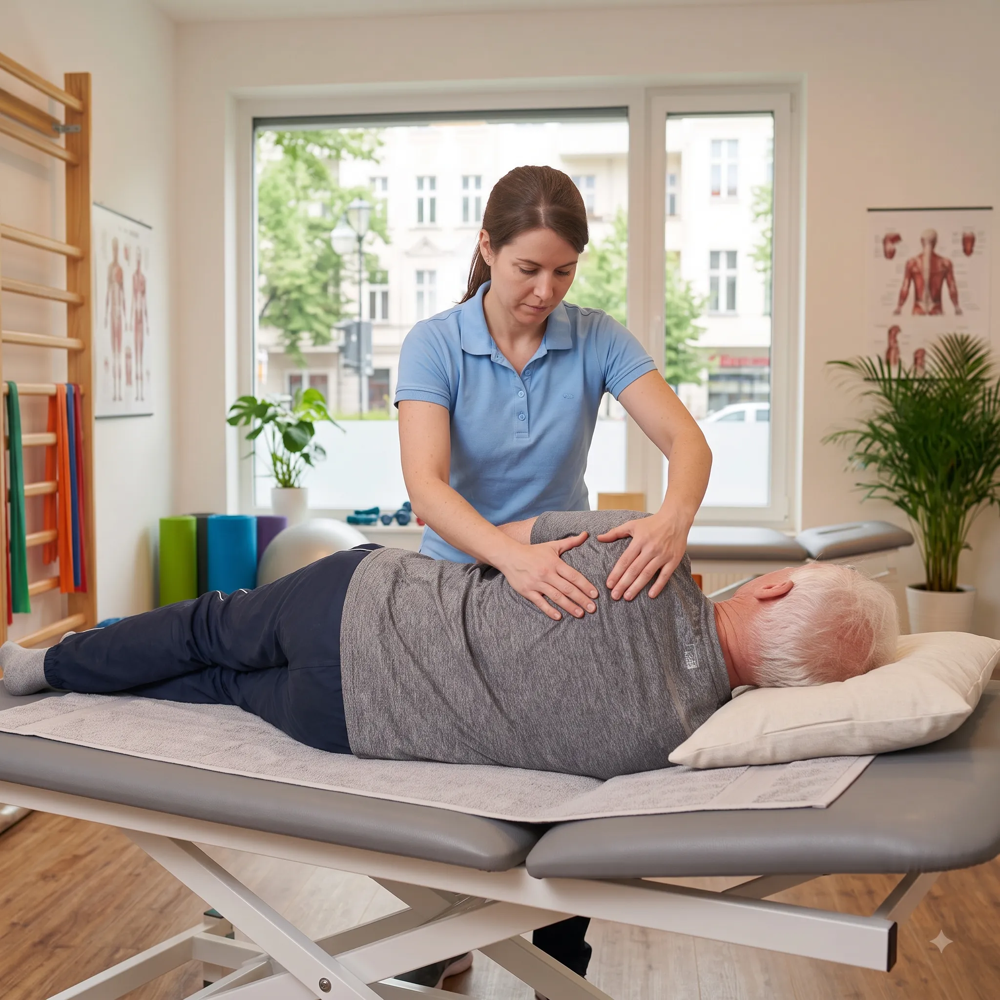

Almanya'da Fizyoterapist Olarak Geleceğinizi İnşa Edin
Sirius Global olarak lisans mezunu ve Almanca eğitimi alan fizyoterapistlerimizin mesleki denklik (Anerkennung), klinik mülakat organizasyonları ve vize süreçlerini uçtan uca yönetiyoruz.
B2 dil sertifikasını (Telc, Goethe veya ÖSD) alan fizyoterapist adaylarımızı öncelikli olarak Essen (Nordrhein-Westfalen - NRW) eyaletindeki anlaşmalı hastane ve rehabilitasyon merkezlerine yerleştiriyoruz.

Almanya'da Fizyoterapist Olmak İçin Gerekli 4 Temel Şart
Almanya Federal Hükümeti resmi kuralları (anerkennung-in-deutschland.de) uyarınca Fizyoterapistlik regüle edilmiş bir meslektir (Reglementierte Berufe).
1. Mesleki Denklik (Anerkennung)
Lisans diplomanızın ve ders müfredatınızın Alman standartlarıyla eşdeğerliliği Eyalet Sağlık Dairesi (Bezirksregierung) tarafından onaylanmalıdır.
2. B2 Almanca Dil Sertifikası
Fizyoterapistler için B2 seviyesinde ÖSD, Goethe veya Telc B2 genel Almanca sertifikasına sahip olunması yasal zorunluluktur.
3. İş Sözleşmesi / İş Kanıtı
NRW eyaleti 31 Mayıs 2024 kuralı gereğince denklik başvurusunda Alman sağlık kurumundan yazılı kabul (Zusage) veya iş kanıtı sunulmalıdır.
4. Vize & Çalışma İzni
Alman Konsolosluğu ön onaylı hızlı vize süreci ile çalışma ve oturum izninin alınarak Almanya'ya varışın sağlanması.
Fizyoterapist Adaylarımızın Almanya'ya Geliş Süreci
Evrak hazırlığından tam devlet denkliğine kadar 6 adımda Almanya kariyer yolculuğunuz.
 4. ADIM
4. ADIM
4. Vize Alım Süreci
Fizyoterapistler İçin Kapsamlı Danışmanlık
Sirius Global olarak 3 ayrı uzman birimimizle (Ana Danışmanlar, Denklik Birimi, İşveren Servisi) fizyoterapist adaylarımıza uçtan uca destek sunuyoruz:
- Vekaleten Denklik Yönetimi: Denklik dosyanızın eyalet dairelerine eksiksiz sunulması.
- Ücretsiz İşe Yerleştirme: İşe yerleştirme, mülakat organizasyonları ve iş sözleşmesi hizmetlerimiz tamamen ÜCRETSİZDİR. Sadece denklik danışmanlık ücreti alınır.
- NRW İş Kanıtı Desteği: Anlaşmalı hastanelerimizden onay yazısı (Zusage) temini.
- Sirius Home Relokasyon: Almanya'ya varışta havalimanı karşılama, eşyalı ev teslimi, ikamet kaydı (Anmeldung) ve 3 ay oryantasyon.
Denklik Karar Belgesi (Bescheid) Süreci
Eyalet Sağlık Dairesi incelemesi tamamlandığında "Bescheid" karar belgesi verilir. Eğitiminizde eksik saat veya farklılık çıkması durumunda 2 telafi yolundan biri seçilir:
A) Anpassungslehrgang (Uyum Stajı)
Kliniklerde maaşlı/destekli pratik çalışma ve eksik ders saatlerini tamamlama.
B) Kenntnisprüfung (Bilgi Denkliği Sınavı)
Mesleki teorik ve pratik yeterlilik sınavını geçerek tam denklik (Urkunde) alma.